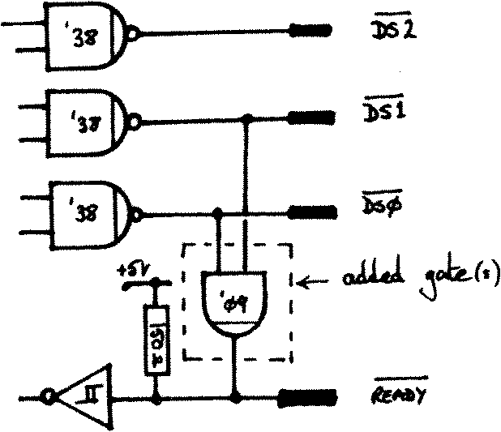

80-Bus News |
November–December 1983 · Volume 2 · Issue 6 |
| Page 45 of 67 |
|---|
ouput coupling capacitor). If you do short out C7, and your monitor does provide a 75 ohm termination, then you may also improve matters by raising the value of the emitter resistor (R6) to 1k or more.
(N.B. Nascom 2 owners who use a monitor rather than a TV and the on-board modulator may like to make similar modifications. I assume the current drive levels on the N2 are set up for the modulator, rather than the direct video output).
Moving on to ‘The sands of time’, this interference is obviously being caused by crosstalk from the logic on the IVC. (The patterns change depending on what job the Host is asking the IVC to perform). I started by decoupling the collector of TR1, the top end of the Base bias chain (R3), and adding diodes in series with R1 and R5 (the ‘bar’ towards the output of each gate). The thinking behind the latter is that it isolates the ‘Hi’ output level from the video drive, each gate now looking like an open collector driver. As a result R5 was changed to 470 ohms, and R1 to 220 ohms to get back to the correct video and sync levels. This didn’t produce any significant change to the visible interference.
So finally I resorted to butchery. I cut the thick power track running to the collector of TR1, and the corresponding track running to the top end of R3. I connected these two isolated points together, and decoupled them with a 47uF tantalum capacitor. I finally added a 68 ohm resistor between this point and the positive supply. (A few turns of wire on a ferrite toroid would have been better, but I had no toroid to hand). This certainly reduced the background noise, although a little was still visible if you looked for it. At this point I stopped. The next step to try, (if you are seeking perfection), is to build a new output stage on a separate board, taking care over the layout and postioning of the board. As for me – I’m sticking with what I’ve got!
I suggest you read Richard Beal’s article elsewhere in this issue as an introduction to the rest of this section.

Fig 3
In the case of the 5.25″ drives the
lack of a ready line, though inconvenient
from a software point of view, is not a
total disaster. This is because the motor-on
monostable will eventually time out and
produce a ‘not ready’ signal. This
immediately causes any ‘hung-up’ access to a
5.25″ drive to abort. However, when 8″
drives are selected, all the circuitry
associated with the motor-on monostable is
disabled because virtually all 8″ drives use
mains powered motors which run continually.
As a result there is no abort signal unless
the 8″ ready line is connected through. The
Fig 3. answer is to insert link 3 – to connect the
ready signal through – and to ‘fake’ ready
signals from those drives that do not
provide them directly.
| Page 45 of 67 |
|---|